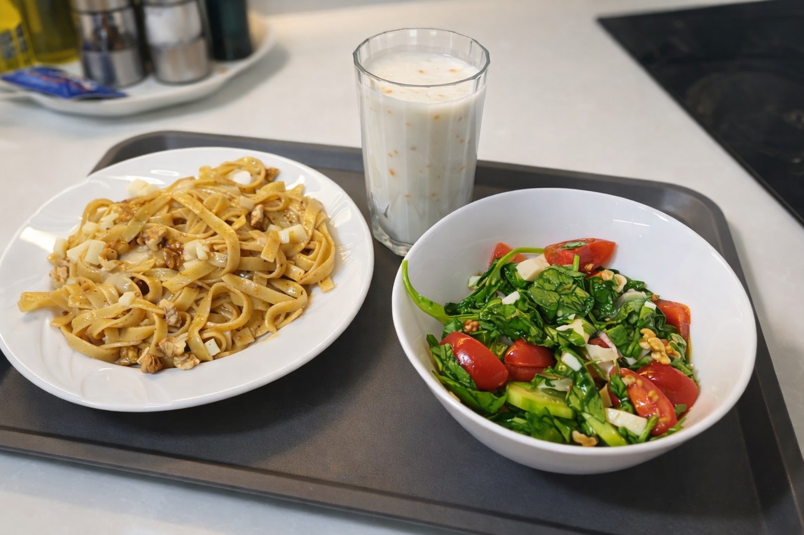
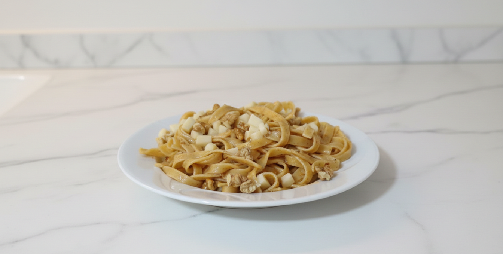
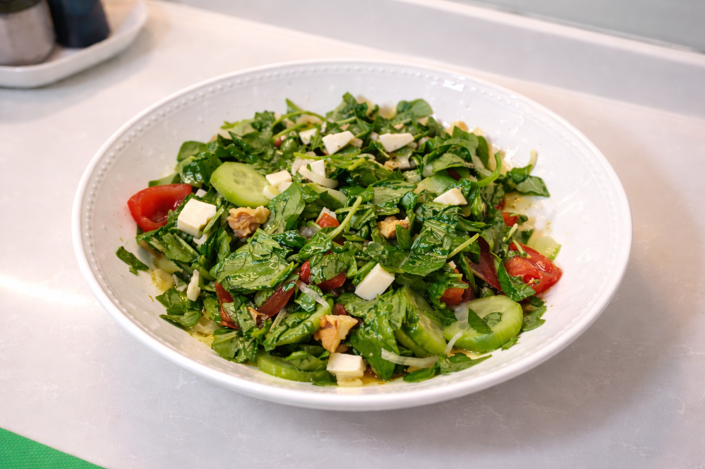
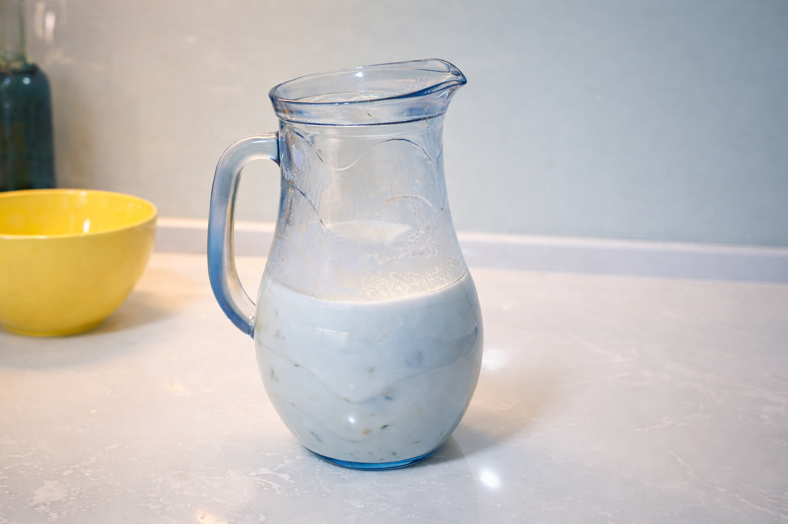

Yumurtalı taze makarnanın zengin dokusunun, keskin İzmir tulumu
ve ferahlatıcı özel ayranla kusursuz uyumu.

1. Yumurtalı & İzmir Tulumlu Makarna
Doku ve lezzet odaklı, yüksek teknik içeren ana öğün.
Malzemeler
125g Barilla Tagliatelle all’Uovo (5 Yuva)
60g İzmir Tulum Peyniri (Ufalanmış)
50g Ceviz İçi (İri parçalanmış)
2 YK Tereyağı + 1 YK Zeytinyağı
Taze çekilmiş karabiber, Pul biber

Detaylı Hazırlanış
Adım 1: Büyük bir tencerede 1.5 litre suyu kaynatın. Kaynayınca 1 tatlı kaşığı tuz atın. Makarnaları ekleyin ve tam 6 dakika orta ateşte haşlayın. Süre sonunda 1 küçük su bardağı haşlama suyunu kenara ayırıp makarnayı süzün.
Adım 2: Geniş bir tavada zeytinyağı ve tereyağını orta ateşte eritin. Yağ köpürmeye başlayınca cevizleri ekleyip 2-3 dakika altın sarısı olana dek kavurun.
Adım 3: Karabiber ve pul biberi yağa atıp 10 saniye çevirin. Süzdüğünüz makarnayı tavaya ekleyin. Ayırdığınız haşlama suyunu üzerine dökün. Yüksek ateşte hızlıca karıştırarak suyun nişastasıyla makarnanın parlamasını sağlayın (yaklaşık 1 dakika).
Adım 4:Ocağı tamamen kapatın. Peynirin yarısını ekleyip 30 saniye harmanlayın. Kalan peyniri tabakladıktan sonra üzerine serpiştirin.
2. İzmir Tulumlu & Cevizli Bahçe Salatası
Asidite dengesi makarnanın ağırlığını kırar.
Malzemeler
150g Karışık yeşillik (Roka ağırlıklı)
40g İzmir Tulum Peyniri (Küçük küpler)
10 adet Çeri domates, 1 adet Salatalık, Yarım kırmızı soğan
2 YK Zeytinyağı, Yarım limonun suyu

Detaylı Hazırlanış
Adım 1: Yeşillikleri yıkayıp kurutun. Nemli kalmamaları hayati önemdedir. Sosu çekmesi için elinizle iri parçalara bölün.
Adım 2: Domatesleri ikiye bölün, soğanları piyazlık (ay şeklinde) çok ince doğrayın. Salatalıkları soyup halka yapın.
Adım 3: Küçük bir kavanozda zeytinyağı, limon suyu ve bir tutam tuzu iyice çalkalayın. Sosu geniş bir kapta sebzelerle birleştirin. En son tulum peynirlerini ekleyip bir kez karıştırın.
3. Nane ve Acı Biberli "Şef" Ayranı
Boza kıvamında, sindirim dostu ferahlık.
Malzemeler
5 tepeleme YK Süzme Yoğurt
1 adet Acı Biber Turşusu (Zar kadar küçük doğranmış)
6 yaprak Taze Nane, Yarım limonun suyu, Yarım bardak buz gibi su

Detaylı Hazırlanış
Adım 1: Yoğurdu derin bir kapta hiç pürüz kalmayana kadar 1 dakika çırpın. Limon suyunu ekleyip çırpmaya devam edin.
Adım 2: Suyu ip gibi akıtarak yoğurda ekleyin. Kıvam yoğun (bardaktan ağır akan) bir yapıda kalmalı.
Adım 3: İncecik kıyılmış naneleri ve acı biber turşusunu ekleyip kaşıkla karıştırın. En az 10 dakika dolapta bekletip servis edin.